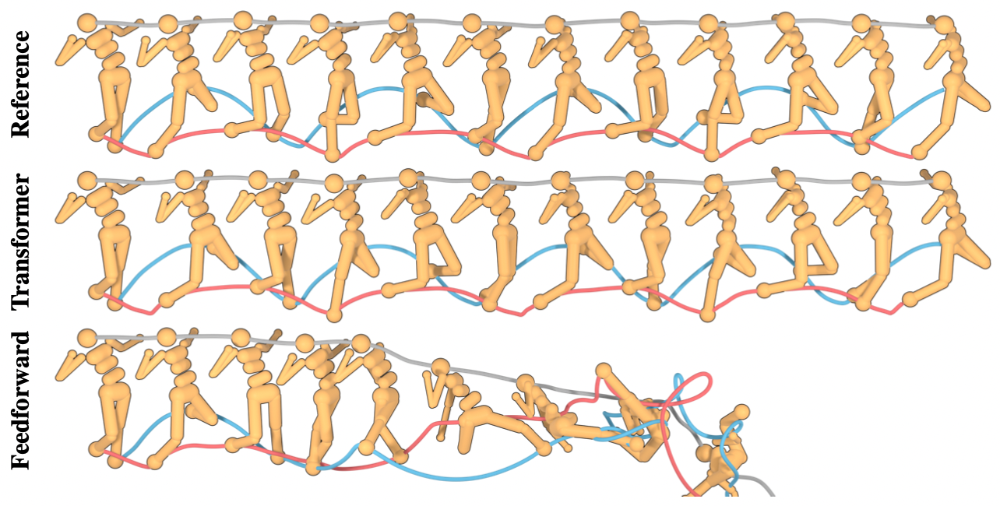

This paper recasts the RL problem as a sequence modeling task. Instead of trying to take actions optimally with respect to some value function (and learning what the value func/policy is along the way), can we use the tools of sequence prediction (a la GPT-N et al), with reward conditioned sequences, to simply predict stae/action trajectories with high reward?
Automatically get to condition on entire sequence, will help when Markov assumption is not good. Maybe helps with longer-horizon planning/coherency? <- Would be good to test this. Actually, they state they get better long horizon results even in provably Markovian environments, which seems weird. Decode trajectories with high reward (not just high likelihood).
Get goal-conditioned behaviour for free, by training a model which always has the goal state permuted to the sequence beginning, and leaving the causal attention mask.
Offline RL for free, by also predicting reward-to-go \(\left( R_t = \sum_{t'=t}^{T-1} \gamma^{t'-t}r_{t'} \right)\), then replacing the log likelihood of token with this quantity during search/planning step (note that this estimates the reward of the behavior policy, not anything optimal (or even self))
Because policy and dynamics are trained jointly, they claim you automatically get soft constraints on never going out of distribution.
To what extent is memory of previous actions/states relevant to the performance gains here, vs architectural/algo differences? Could it be that any approach that adds action/state representation history would improve performance?
By modeling each dimension of state and action as a separate token, they severely limit the horizon context length to \(\left( \frac{512}{N+M+1} \right)\) where \(N=\text{dim}(\text{states}), M=\text{dim}(\text{actions})\). Could making the context horizon longer improve the planning coherency?